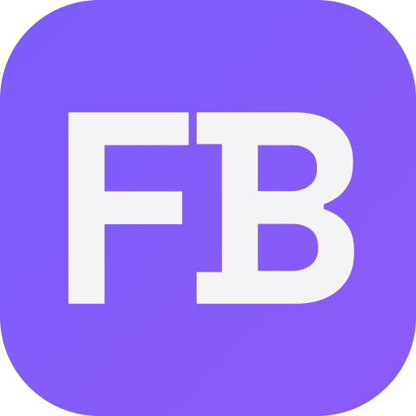

The handful of decisions every page of my portfolio inherits — two typefaces, four colours, one mark. Written down so the build stays consistent.
I build intelligent systems for education, healthcare, crisis response and sustainability. Sora carries the reading weight — light, wide-set and quiet, so paragraphs stay comfortable at small sizes while the headings do the shouting.
Both are free on Google Fonts. Small uppercase labels are Space Grotesk at 0.28em letter-spacing rather than a third typeface — the tracking does the work a mono font used to do.
Two supporting neutrals carry secondary text and card surfaces: #9D9DA8 muted text · #0C0C10 surface. Violet appears in two tints for gradients only — #7C5CFF and #A78BFA. Nothing else gets a colour, which is what keeps the work louder than the page.

Wordmark · Space Grotesk BoldMy initials set in Space Grotesk Bold, drawn from the real typeface outlines so the icon never falls back to a system font, on a rounded violet tile. It survives 16px, which is the only test a favicon has to pass.
Type: Space Grotesk (headings, labels) + Sora (body). Palette: ink #060608, paper #F4F4F6, violet #8B5CF6, signal cyan #22D3EE.
Mood: a quiet, near-black engineering lab — heavy uppercase headings, generous space, and colour used only to point at things, so the projects are the loudest thing on the page.